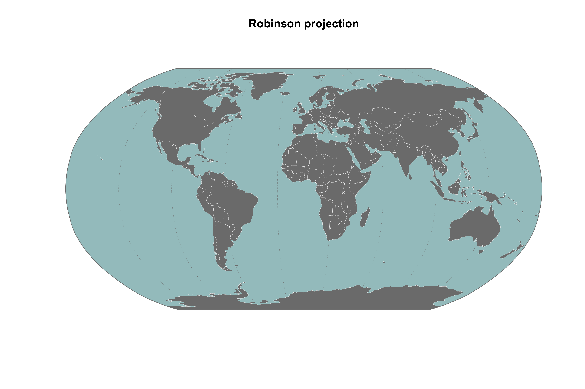
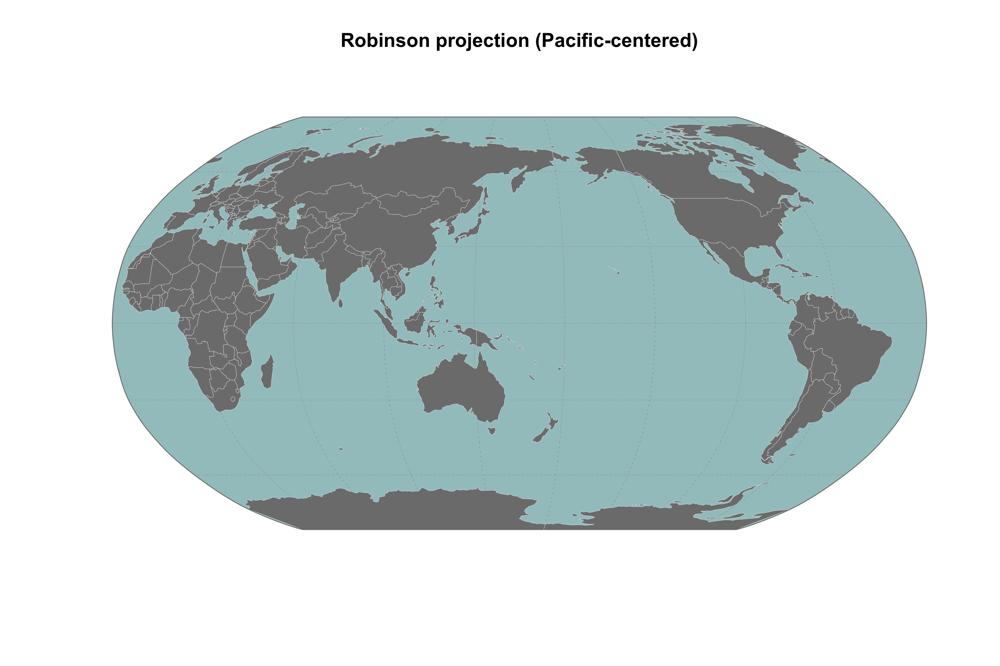
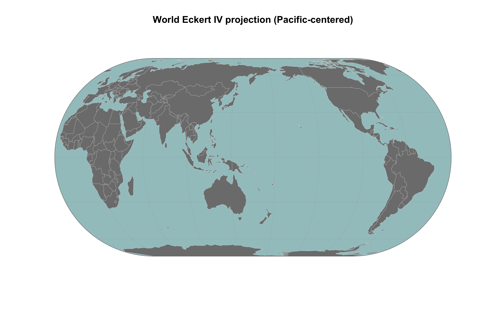
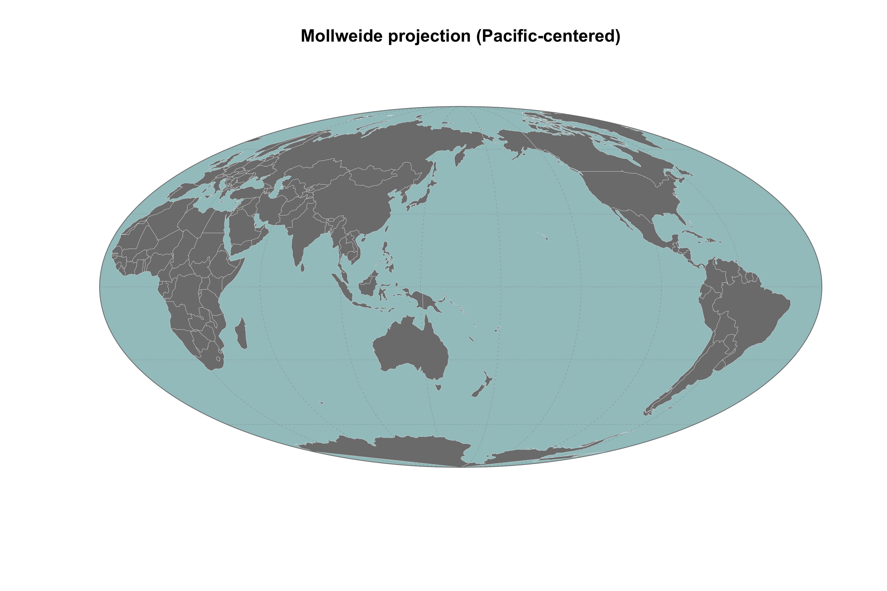
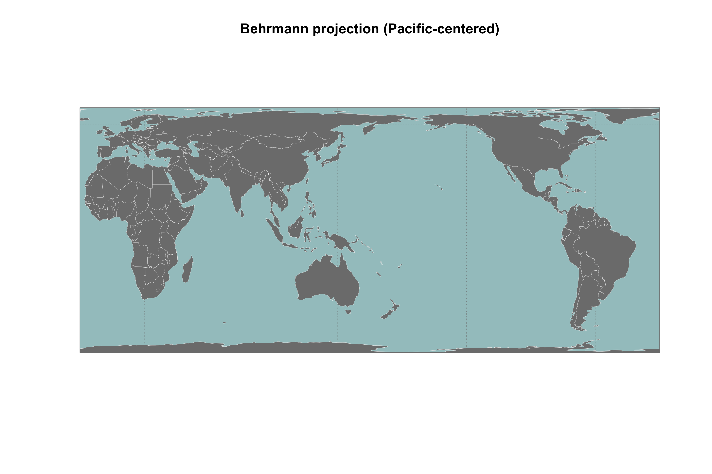

The goal of the R package robinmap is to map World countries in the Robinson projection system (or others CRS) and to center the map on a different meridian than Greenwich. It uses the Natural Earth layer as a base map.





System Requirements
This package handles spatial objects and requires some system dependencies (GDAL, PROJ and GEOS). Please visit this page to correctly install these tools.
Installation
You can install the development version from GitHub with:
# install.packages("remotes")
remotes::install_github("FRBCesab/robinmap")Then you can attach the package robinmap:
Usage
## Default map ----
robinmap()
## Robinson projection - Pacific-centered ----
robinmap(center = 160)
## World Eckert IV projection - Pacific-centered ----
eckert <- "+proj=eck4 +lon_0=0 +x_0=0 +y_0=0 +ellps=WGS84 +datum=WGS84 +units=m +no_defs"
robinmap(center = 160, crs = eckert)
## Mollweide projection - Pacific-centered ----
mollweide <- "+proj=moll +lon_0=0 +x_0=0 +y_0=0 +datum=WGS84 +units=m +no_defs"
robinmap(center = 160, crs = mollweide)
## Behrmann projection - Pacific-centered ----
behrmann <- "+proj=cea +lon_0=0 +lat_ts=30 +x_0=0 +y_0=0 +datum=WGS84 +ellps=WGS84 +units=m +no_defs"
robinmap(center = 160, crs = behrmann)Citation
Please cite this package as:
Casajus Nicolas (2022) robinmap: World Map in Pacific Centered Robinson Projection. R package version 0.0.0.9000.
Code of Conduct
Please note that the robinmap project is released with a Contributor Code of Conduct. By contributing to this project, you agree to abide by its terms.